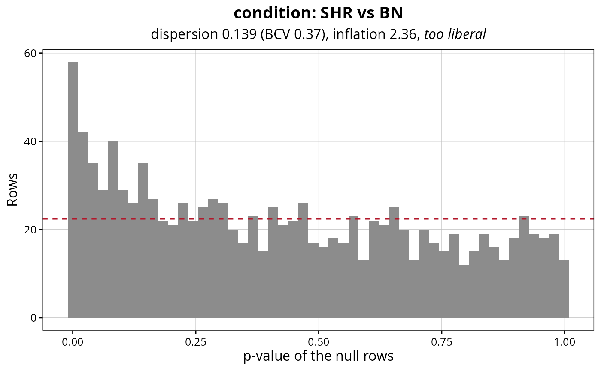
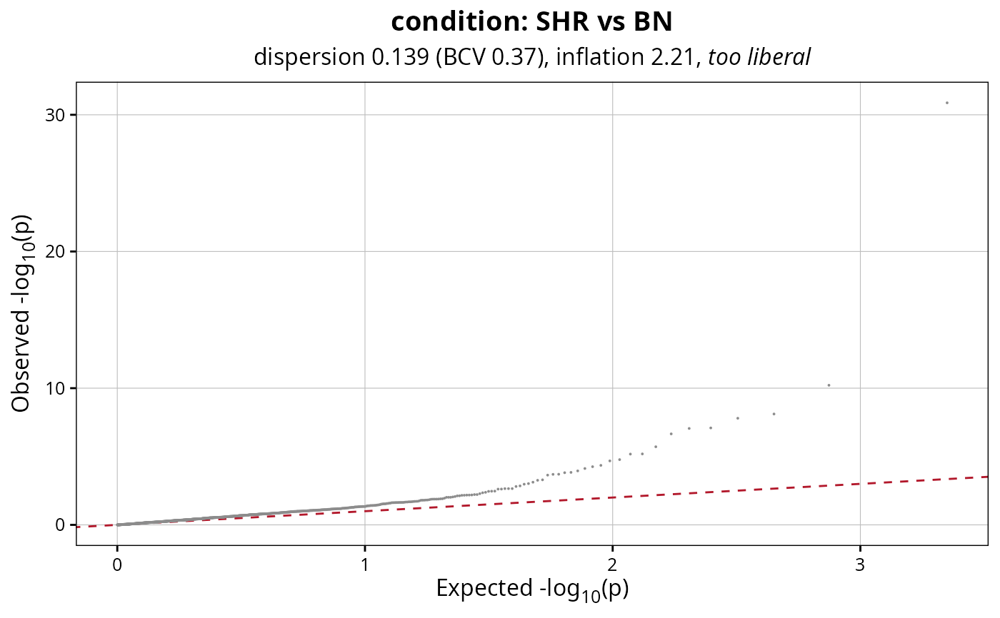

Draws the p-values of the rows that should not respond to a contrast, against the flat distribution they would follow if the dispersion were right.
Usage
plotNullCalibration(
calibration,
style = "histogram",
bins = 50,
colours = NULL,
title = NULL,
subtitle = NULL,
legendPosition = "none",
baseSize = 12
)Arguments
- calibration
List returned by
checkNullCalibration.- style
String with the kind of plot, one of
"histogram","qq"and"abundance". Default:"histogram".- bins
Numeric value with the number of bins of the histogram. Default:
50.- colours
Character vector of length two with the colours of the data and of the expected line. Default:
NULL.- title
String with the title of the plot, rendered as markdown. Default:
NULL, the contrast.- subtitle
String with the subtitle of the plot, rendered as markdown. Default:
NULL, the dispersion and the verdict.- legendPosition
String with the position of the legend. Default:
"none".- baseSize
Numeric value with the base font size. Default:
12.
Details
A flat histogram sitting on the expected line is the target. Bars piling up near zero mean the dispersion is too low and the fit is calling library-to-library variation a treatment effect; the same optimism is in the regions, at the same rate. A histogram sagging near zero means the opposite, which costs sensitivity and nothing else.
The quantile plot says the same thing with more resolution in the tail, which is where the regions that end up in a figure come from. The abundance plot says where the trouble is: a flat line across the strata means the dispersion is wrong everywhere, while a line rising towards the weak rows means the filter is too loose and filterRegions is the fix.
Examples
fit <- loadExampleData("fit", verbose = FALSE)
calibration <- checkNullCalibration(fit,
contrast = c("condition", "SHR", "BN"),
source = "background",
verbose = FALSE)
# A flat histogram is what a well calibrated test looks like
plotNullCalibration(calibration)

plotNullCalibration(calibration, style = "qq")
